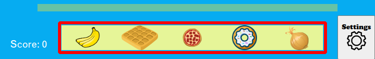
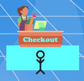

Grocery Gamers
Backstory
The COVID-19 pandemic has made its way to the quaint little town of Groceryville.
To slow the spread of the virus, the state's Governor has implemented a stay at home
order.
If you are going to survive the next week at home, you will need to stock up on groceries.
However, grocery shopping during the pandemic is not an easy feat.
You must traverse the grocery store while maintaining proper social distancing from other
customers who may be sick with COVID-19.
Additionally, you should also be careful to avoid the COVID-19 germs that may be floating around
the store or living on surfaces.
Game Controls
To move the player, use the up, down, right, left arrow keys that correspond to the direction
you would like to move the player. To collect grocery items, walk up to the shelf and press the
spacebar when the item you want is circled.
Navigate
Collect Grocery Items
Earning Points
To earn points, traverse the store without losing all of your health from sick customers or
COVID-19 germs. Pick up the items on your shopping list (shown in red below) to gain points.
Picking up items not on your shopping list will cause you to lose points.

At any time, you can walk in front of the checkout counter (shown below) to add the points from
the items you have collected so far to your total score. If you checkout after collecting all
the items on your list, you will get a new set of items to collect and the store shelves will be
restocked.

Power Ups
Make sure to keep an eye out as you shop because Dr. Fauci may visit the store and throw you
some useful powerups. Medicine recovers your health. Vaccines provide 10 seconds of immunity
from germs and sick customers.
Medicine (Recover Health)

Vaccine (Temporary Immunity)
COVID-19 CDC Guidelines
While Grocery Gamers is merely a game developed for EECS 493, our team would like to recognize
the seriousness of the COVID-19 pandemic.
COVID-19 spreads easily from person-to-person and proper guidelines must be followed to ensure
your safety.
When visting a public space, such as a grocery store, wearing the proper facial covering and
maintaining social distance of 6 feet is crucial to reducing the risk of catching and spreading
the virus.
To learn more about how to stay safe during the pandemic, please refer to these
CDC guidelines.
Game Paused
Mute Background Music
Mute Sound Effects
Mute All Audio
Difficulty: